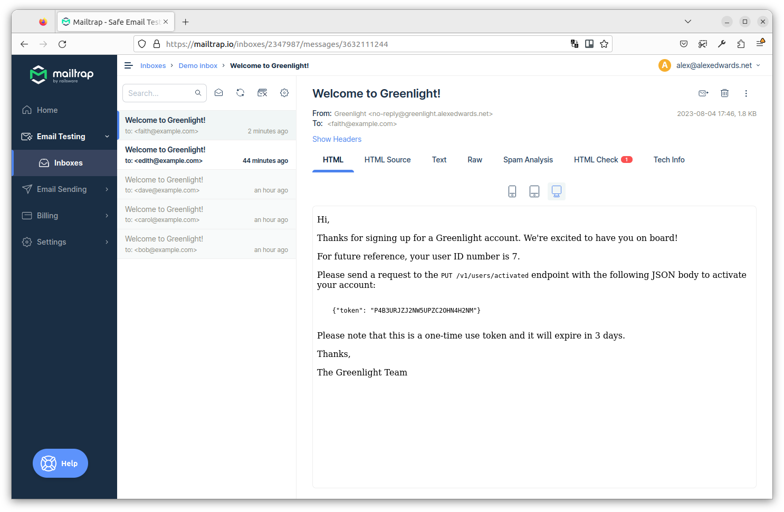

ارسال توکنهای فعالسازی
مرحله بعدی اتصال این بخش به registerUserHandler است، به طوری که وقتی کاربری ثبتنام میکند، یک توکن فعالسازی تولید شده و در ایمیل خوشامدگویی او قرار بگیرد — مشابه این:
Hi,
Thanks for signing up for a Greenlight account. We're excited to have you on board!
For future reference, your user ID number is 123.
Please send a request to the `PUT /v1/users/activated` endpoint with the following JSON
body to activate your account:
{"token": "RMMCV3MZCEBYQADXBODCLTAF6L"}
Please note that this is a one-time use token and it will expire in 3 days.
Thanks,
The Greenlight Team
مهمترین نکته درباره این ایمیل این است که ما به کاربر دستور میدهیم با ارسال یک درخواست PUT به API ما حساب خود را فعال کند. از کاربر نمیخواهیم با کلیک روی لینکی که توکن را به عنوان بخشی از URL path یا query string شامل شده، حساب خود را فعال کند.
البته اگر کاربر با کلیک روی لینک و ارسال درخواست GET (که به صورت پیشفرض هنگام کلیک روی لینک ارسال میشود) حساب خود را فعال کند، قطعاً راحتتر خواهد بود، اما در مورد API ما این روش معایب بزرگی دارد. به ویژه:
این کار اصل HTTP را نقض میکند که بر اساس آن، متد
GETفقط باید برای درخواستهای ‘امن’ که منابع را بازیابی میکنند استفاده شود — نه برای درخواستهایی که چیزی را تغییر میدهند (مانند وضعیت فعالسازی کاربر).ممکن است مرورگر یا آنتیویروس کاربر لینک URL را از قبل در پسزمینه دریافت کند و بدون اطلاع، حساب را فعال کند. این نظر در Stack Overflow خطر این موضوع را به خوبی توضیح میدهد:
این موضوع میتواند به سناریویی منجر شود که در آن یک مهاجم (Eve) میخواهد با استفاده از ایمیل شخص دیگری (Alice) حسابی ایجاد کند. Eve ثبتنام میکند و Alice ایمیلی دریافت میکند. Alice ایمیل را باز میکند زیرا کنجکاو است درباره حسابی که درخواست نکرده بداند. مرورگر (یا آنتیویروس) او URL را در پسزمینه درخواست میکند و بدون اطلاع، حساب را فعال میکند.
در مجموع، باید مطمئن شوید که هر عملی که وضعیت برنامه شما را تغییر میدهد (از جمله فعالسازی کاربر) فقط از طریق درخواستهای POST، PUT، PATCH یا DELETE اجرا شود — نه با درخواستهای GET.
اما در حال حاضر، اگر دنبال میکنید، قالب ایمیل خوشامدگویی خود را به روز کنید تا توکن فعالسازی به صورت زیر در آن قرار بگیرد:
{{define "subject"}}Welcome to Greenlight!{{end}}
{{define "plainBody"}}
Hi,
Thanks for signing up for a Greenlight account. We're excited to have you on board!
For future reference, your user ID number is {{.userID}}.
Please send a request to the `PUT /v1/users/activated` endpoint with the following JSON
body to activate your account:
{"token": "{{.activationToken}}"}
Please note that this is a one-time use token and it will expire in 3 days.
Thanks,
The Greenlight Team
{{end}}
{{define "htmlBody"}}
<!doctype html>
<html>
<head>
<meta name="viewport" content="width=device-width" />
<meta http-equiv="Content-Type" content="text/html; charset=UTF-8" />
</head>
<body>
<p>Hi,</p>
<p>Thanks for signing up for a Greenlight account. We're excited to have you on board!</p>
<p>For future reference, your user ID number is {{.userID}}.</p>
<p>Please send a request to the <code>PUT /v1/users/activated</code> endpoint with the
following JSON body to activate your account:</p>
<pre><code>
{"token": "{{.activationToken}}"}
</code></pre>
<p>Please note that this is a one-time use token and it will expire in 3 days.</p>
<p>Thanks,</p>
<p>The Greenlight Team</p>
</body>
</html>
{{end}}
بعد از آن باید registerUserHandler را به روز کنیم تا توکن فعالسازی جدیدی تولید کرده و آن را همراه با ID کاربر به عنوان داده پویا به قالب ایمیل خوشامدگویی پاس دهد.
به این صورت:
package main import ( "errors" "net/http" "time" // New import "greenlight.alexedwards.net/internal/data" "greenlight.alexedwards.net/internal/validator" ) func (app *application) registerUserHandler(w http.ResponseWriter, r *http.Request) { ... err = app.models.Users.Insert(user) if err != nil { switch { case errors.Is(err, data.ErrDuplicateEmail): v.AddError("email", "a user with this email address already exists") app.failedValidationResponse(w, r, v.Errors) default: app.serverErrorResponse(w, r, err) } return } // After the user record has been created in the database, generate a new activation // token for the user. token, err := app.models.Tokens.New(user.ID, 3*24*time.Hour, data.ScopeActivation) if err != nil { app.serverErrorResponse(w, r, err) return } app.background(func() { // As there are now multiple pieces of data that we want to pass to our email // templates, we create a map to act as a 'holding structure' for the data. This // contains the plaintext version of the activation token for the user, along // with their ID. data := map[string]any{ "activationToken": token.Plaintext, "userID": user.ID, } // Send the welcome email, passing in the map above as dynamic data. err := app.mailer.Send(user.Email, "user_welcome.tmpl", data) if err != nil { app.logger.Error(err.Error()) } }) err = app.writeJSON(w, http.StatusAccepted, envelope{"user": user}, nil) if err != nil { app.serverErrorResponse(w, r, err) } }
خب، بیایید ببینیم این چگونه کار میکند…
برنامه را مجدداً راهاندازی کنید و سپس یک حساب کاربری جدید با آدرس ایمیل faith@example.com ثبت کنید. مشابه این:
$ BODY='{"name": "Faith Smith", "email": "faith@example.com", "password": "pa55word"}'
$ curl -d "$BODY" localhost:4000/v1/users
{
"user": {
"id": 7,
"created_at": "2021-04-15T20:25:41+02:00",
"name": "Faith Smith",
"email": "faith@example.com",
"activated": false
}
}
و اگر صندوق Mailtrap خود را دوباره باز کنید، اکنون باید ایمیل خوشامدگویی جدید حاوی توکن فعالسازی برای faith@example.com را ببینید، مانند این:

در مورد من، میتوانیم ببینیم که توکن فعالسازی ارسال شده به faith@example.com برابر است با P4B3URJZJ2NW5UPZC2OHN4H2NM. اگر شما هم دنبال میکنید، توکن شما باید رشتهای ۲۶ کاراکتری متفاوت باشد.
برای آگاهی، بیایید نگاهی سریع به جدول tokens در پایگاه داده PostgreSQL خود بیندازیم. دوباره، مقادیر دقیق در پایگاه داده شما متفاوت خواهد بود، اما باید مشابه این باشد:
$ psql $GREENLIGHT_DB_DSN
Password for user greenlight:
psql (15.4 (Ubuntu 15.4-1.pgdg22.04+1))
SSL connection (protocol: TLSv1.3, cipher: TLS_AES_256_GCM_SHA384, bits: 256, compression: off)
Type "help" for help.
greenlight=> SELECT * FROM tokens;
hash | user_id | expiry | scope
--------------------------------------------------------------------+---------+------------------------+------------
\x09bcb40206b25fe511bfef4d56cbe8c4a141869fc29612fa984b371ef086f5f5 | 7 | 2021-04-18 20:25:41+02 | activation
میتوانیم ببینیم که هش توکن فعالسازی به صورت مقدار زیر نمایش داده شده است:
09bcb40206b25fe511bfef4d56cbe8c4a141869fc29612fa984b371ef086f5f5
همانطور که قبلاً اشاره کردیم، psql همیشه مقادیر ستونهای bytea را به صورت رشته hex-encoded نمایش میدهد. بنابراین آنچه اینجا میبینیم کدگذاری hexadecimal از هش SHA-256 توکن متنی P4B3URJZJ2NW5UPZC2OHN4H2NM است که در ایمیل خوشامدگویی ارسال کردیم.
همچنین توجه کنید که مقدار user_id برابر با 7 برای کاربر faith@example.com صحیح است، زمان انقضا به درستی سه روز از حالا تنظیم شده، و توکن مقدار scope برابر activation دارد؟
اطلاعات تکمیلی
یک endpoint مستقل برای تولید توکنها
شاید بخواهید یک endpoint مستقل برای تولید و ارسال توکنهای فعالسازی به کاربران خود فراهم کنید. این میتواند مفید باشد اگر نیاز دارید توکن فعالسازی را دوباره ارسال کنید، مثلاً وقتی کاربر در مهلت ۳ روزه حساب خود را فعال نمیکند یا ایمیل خوشامدگویی خود را هرگز دریافت نمیکند.
کد پیادهسازی این endpoint ترکیبی از الگوهایی است که قبلاً درباره آنها صحبت کردهایم، بنابراین به جای تکرار آنها در جریان اصلی کتاب، دستورالعملها در این پیوست گنجانده شده است.